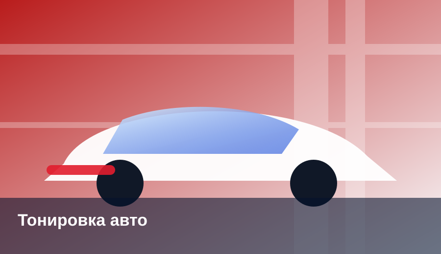
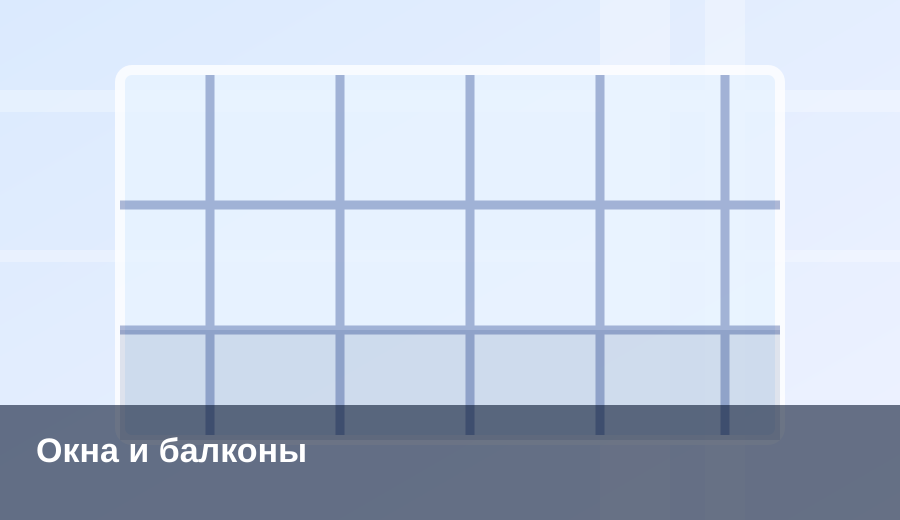
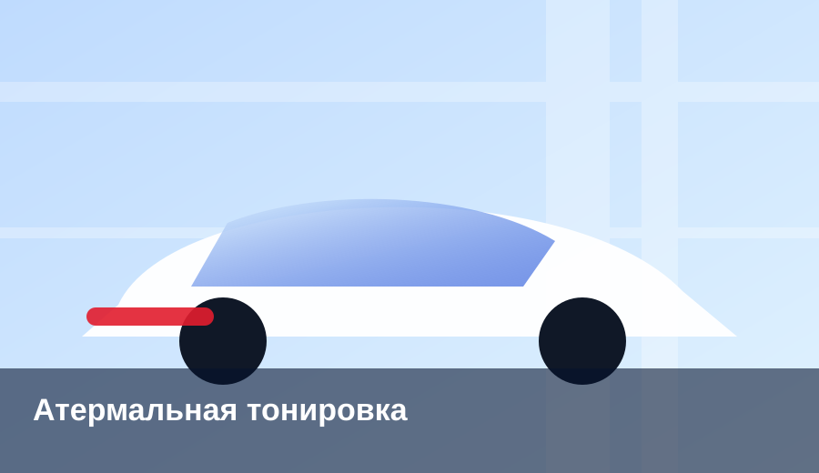
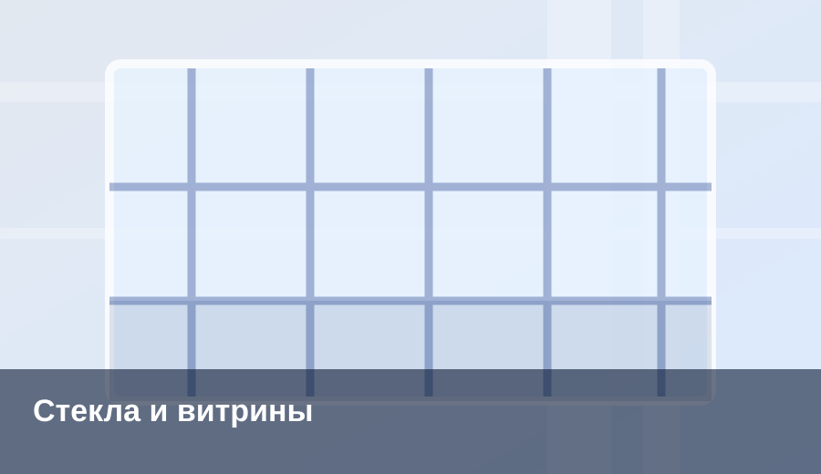
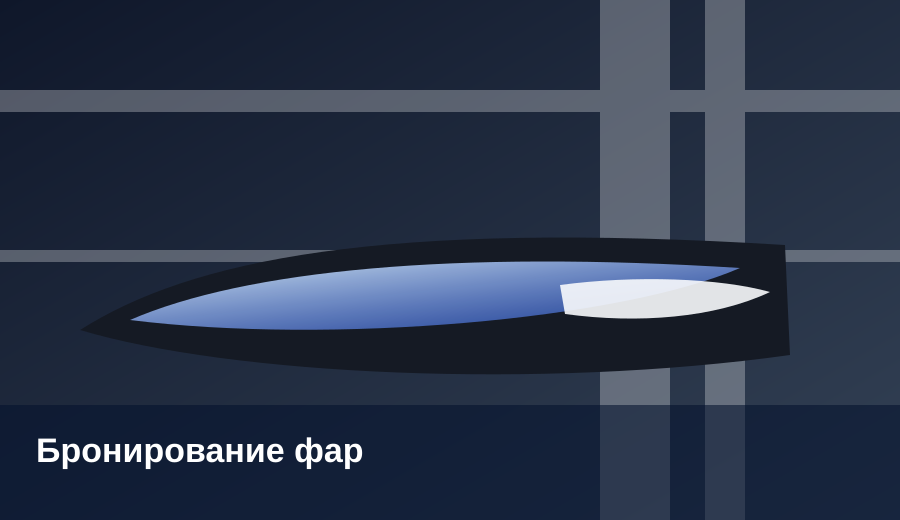
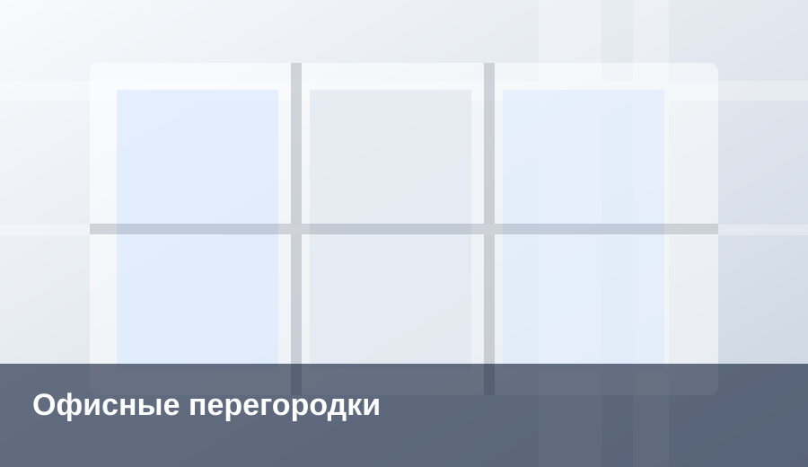
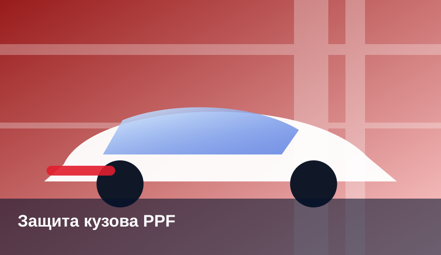
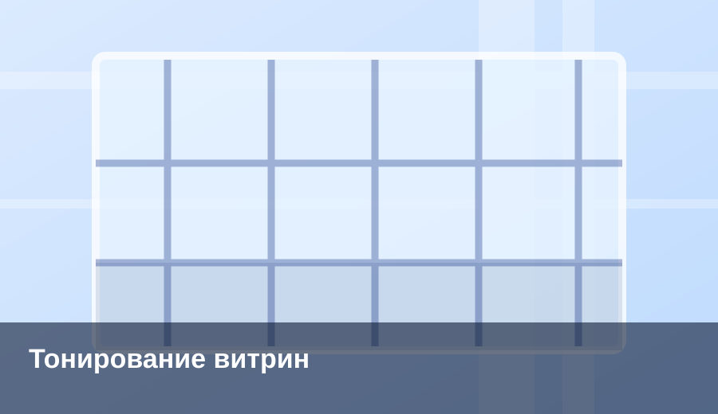

Продажа и установка тонировочных плёнок
для авто, окон и зданий
Профессиональная тонировка и защита стекол в Екатеринбурге и по всей России. Автомобильные, архитектурные, атермальные, защитные и декоративные плёнки.
Онлайн-запись / заявка на консультацию
Форма демонстрационная. Основная запись выполняется через Cal.com.
Наши услуги

1. Тонировка стекол автомобиляКачественная тонировка автомобильных стекол премиальными материалами.
Перейти на страницу услуги →
2. Тонировка балконов и оконЗащита от солнца, жары и посторонних взглядов в квартирах и домах.
Перейти на страницу услуги →
3. Атермальная тонировка автомобиляЗащита от жары и ультрафиолета без лишнего затемнения салона.
Перейти на страницу услуги →
4. Бронирование стекол и витринЗащита стекол от удара, осколков и повышение безопасности объекта.
Перейти на страницу услуги →
5. Бронирование фарЗащита фар от сколов, царапин, пескоструя и помутнения.
Перейти на страницу услуги →
6. Декоративное тонирование офисных перегородокМатовые, декоративные и дизайнерские плёнки для перегородок и интерьеров.
Перейти на страницу услуги →
7. Защита авто полиуретановой пленкойПрозрачная защита кузова от сколов, царапин и реагентов.
Перейти на страницу услуги →
8. Тонирование витринТонировка витрин и фасадного стекла для комфорта, приватности и внешнего вида.
Перейти на страницу услуги →